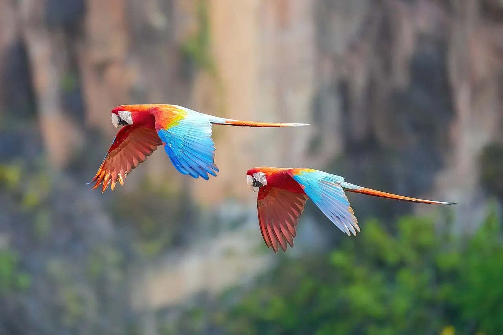
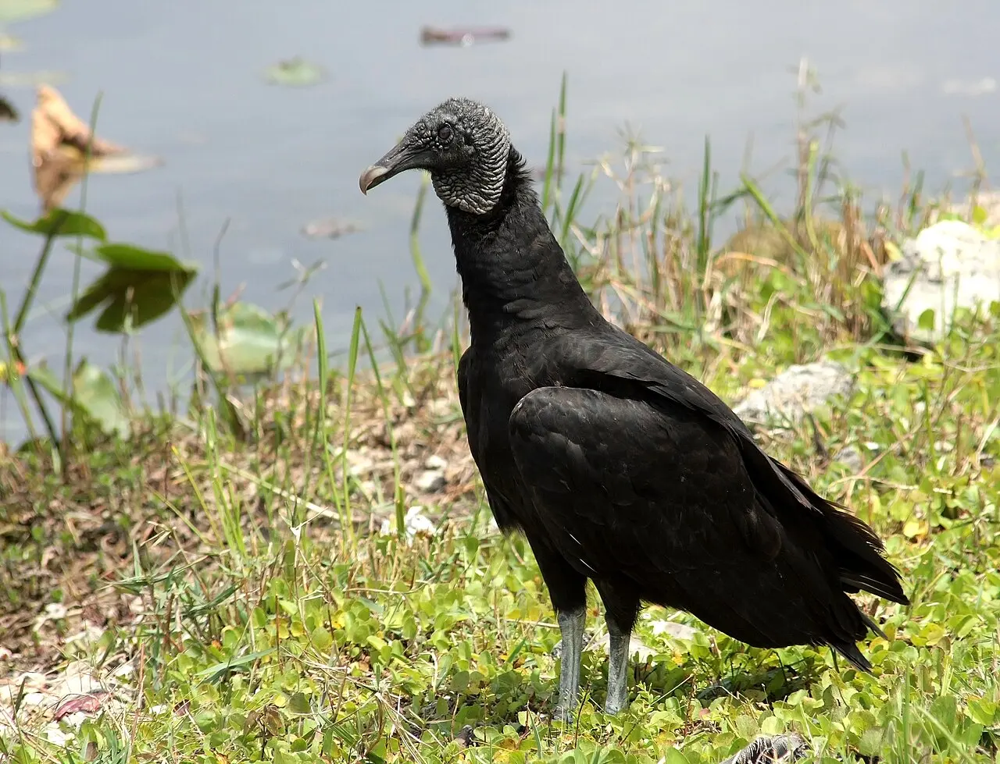

Módulo 4 Aula 19
Quem come o quê
O que a ave come define o bico, o voo e até o lugar que ela ocupa na floresta. Juntas, as aves cuidam de tarefas que ninguém mais faz.
- Os grandes grupos de dieta das aves
- Um exemplo brasileiro de cada um
- O papel das aves em espalhar sementes

Ave da aula
Arara-vermelha-grande Ara chloropterus
Grupos de dieta
Chamamos de um grupo de espécies que comem coisas parecidas do mesmo jeito. Veja seis exemplos brasileiros.

Nectarívoro: beija-flor
Come néctar, que é açúcar concentrado, um combustível de alto rendimento para um corpo que gasta tanta energia[1]. Ao visitar as flores, também leva pólen de uma para outra.
Frugívoro: arara
Quem come frutos espalha sementes. Um estudo em uma savana amazônica da Bolívia mostrou que as araras espalham sementes de palmeiras grandes e ajudam a moldar a paisagem[2].

Piscívoro: biguá
Come principalmente peixes[6]. Persegue a presa mergulhando e a captura com o bico.

Carniceiro: urubu
Come animais mortos. O urubu-de-cabeça-vermelha acha a carniça pelo cheiro; o de cabeça preta depende mais da visão e segue outros urubus[5].

Predador de aves: falcão-peregrino
Ataca em mergulho, e suas presas incluem patos e uma grande variedade de aves menores[7].

Onívoro: tucano
Os tucanos são vistos como comedores de frutos, mas a maioria das espécies come uma grande variedade de alimentos: insetos, cobras, sapos e, às vezes, pequenos mamíferos[8].
Uma ave pode se encaixar em mais de um grupo. Os exemplos mostram o comportamento mais marcante de cada espécie, não tudo o que ela come.
Aves e sementes
Quando uma ave come um fruto, a semente muitas vezes passa por ela e cai longe da planta-mãe. Assim, as aves plantam árvores. Em florestas tropicais, os animais espalham as sementes de mais de 70% das espécies de árvores[3, 4]. Um estudo comparou duas ilhas do Pacífico, Guam e Saipan: em Guam, sem as aves, nenhuma semente chegou às florestas degradadas; em Saipan, aves que comem frutos levavam regularmente sementes de florestas preservadas até essas áreas, o que permite que plantas nativas voltem a crescer[3]. Aves maiores levam sementes de espécies de fim de sucessão, associadas a mais carbono guardado[4].
Por que isso importa? Cada guilda faz uma tarefa que sustenta o resto da floresta. Perder um grupo de aves pode afetar as plantas que dependem dele.
Palavras novas
Teste rápido
Sem nota. Se errar, tente de novo.
O que é uma guilda alimentar?
Como as aves que comem frutos ajudam as florestas?
Qual ave come principalmente peixes?
Referências e leitura complementar
Onde conferir o que foi dito nesta aula. Os números entre colchetes no texto levam a estas fontes. Os links abrem em outra aba.
- Where Do Hummingbirds Get All That Energy?Audubon · inglês · leitura complementarComo os beija-flores sustentam um gasto de energia tão alto.
- Seed dispersal by macaws shapes the landscape of an Amazonian ecosystemScientific Reports (Nature) · inglêsAraras espalhando sementes na Amazônia.
- Natural Experiment Demonstrates That Bird Loss Leads to Cessation of Dispersal of Native Seeds from Intact to Degraded ForestsPubMed Central (artigo científico) · inglêsSem aves, sementes deixam de chegar a florestas degradadas.
- Frugivores enhance potential carbon recovery in fragmented landscapesNature Climate Change · inglês · leitura complementarO papel das aves que comem frutos na recuperação de florestas.
- Do vultures find dead animals by smell or by tracking predators or scavengers on the ground?All About Birds · Cornell Lab of Ornithology · inglêsO olfato do urubu-de-cabeça-vermelha e como ele acha carniça.
- Neotropic Cormorant Life HistoryAll About Birds · Cornell Lab of Ornithology · inglêsDieta e pesca do biguá, ave de bico com gancho.
- Peregrine falconEncyclopaedia Britannica · inglêsVelocidade e biologia do falcão-peregrino.
- ToucanEncyclopaedia Britannica · inglês · leitura complementarBiologia dos tucanos.
- Roseate Spoonbills ForageBird Academy · Cornell Lab of Ornithology · inglêsComo o colhereiro procura comida com o bico na água rasa.
Os endereços foram abertos e conferidos em 29/09/2026. Alguns sites de revistas científicas e de órgãos oficiais exigem verificação humana e não puderam ser testados por robô. Sites externos podem mudar ou sair do ar.
Para levar
Em três frases
- As aves se dividem em grupos de dieta: nectarívoros, frugívoros, piscívoros, carniceiros, predadores e onívoros, entre outros.
- Aves que comem frutos espalham sementes e ajudam as florestas a se recuperar.
- Sem esses dispersores de sementes, as florestas degradadas deixam de receber sementes novas.